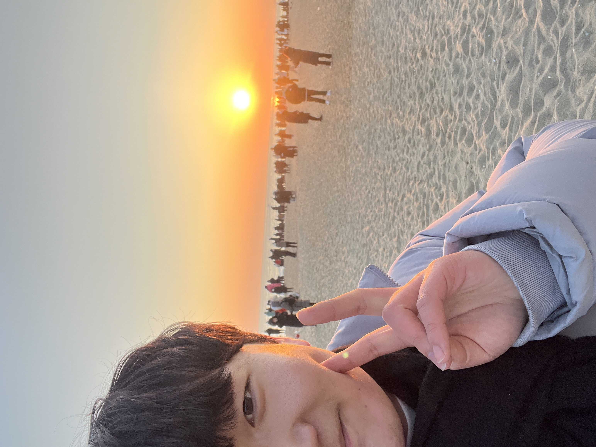
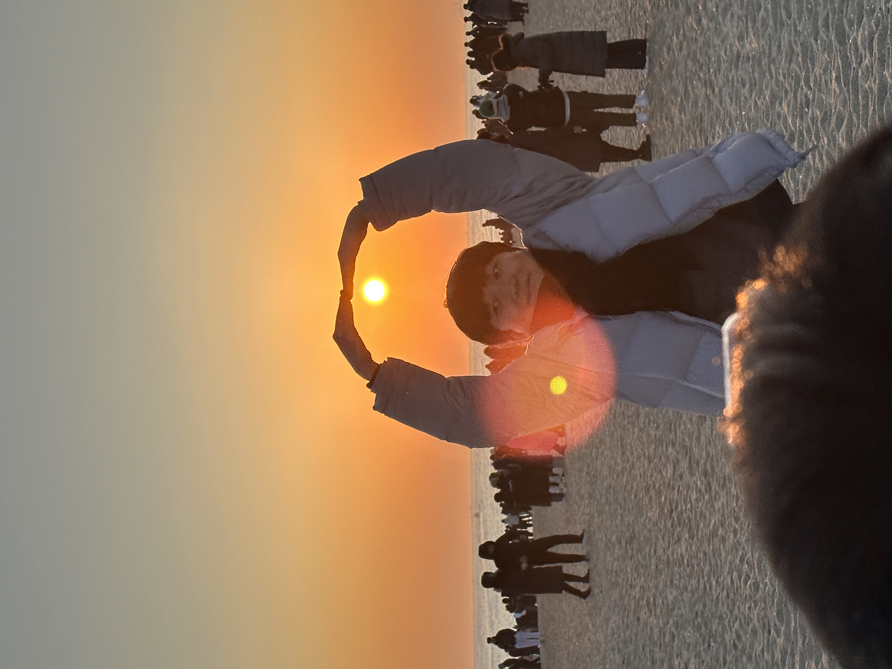
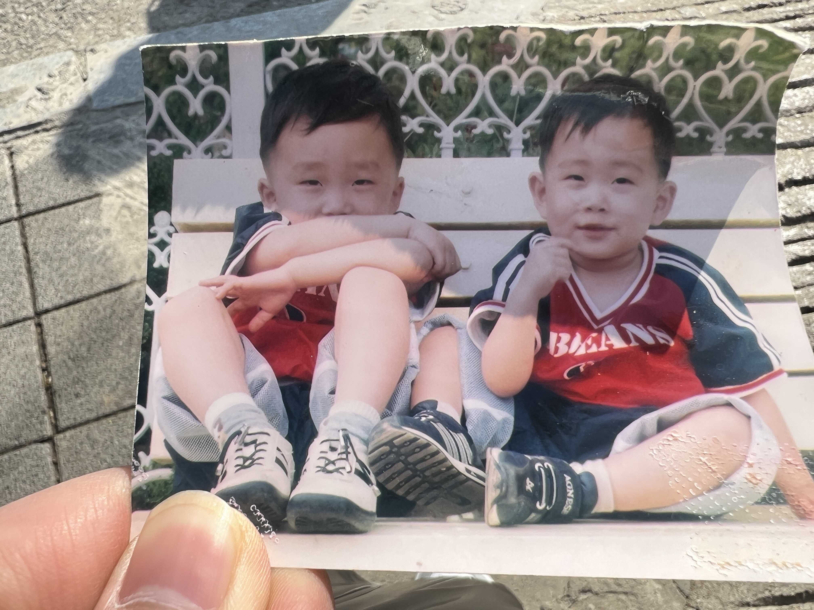
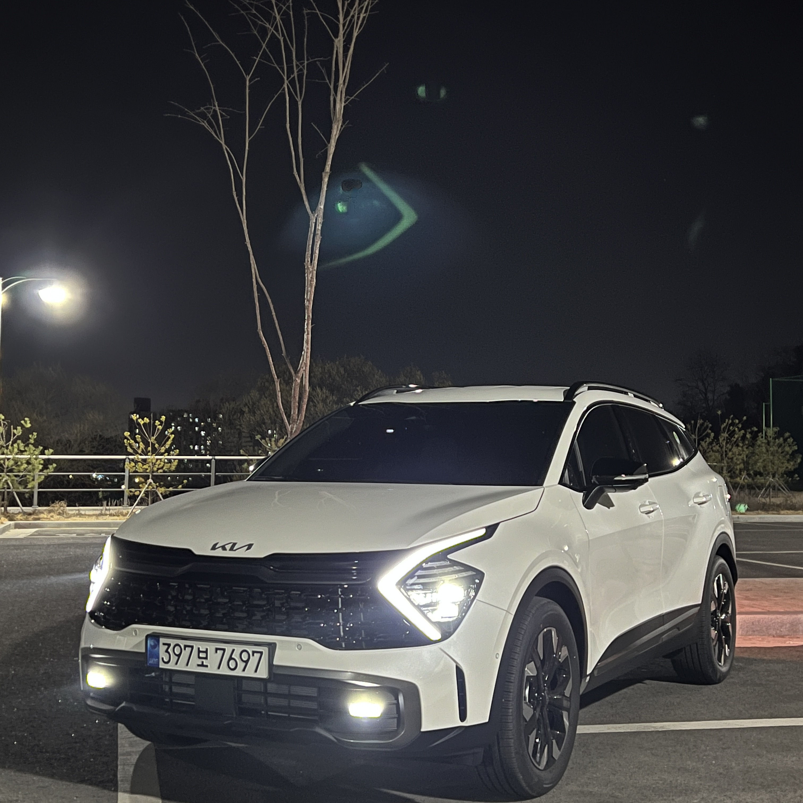
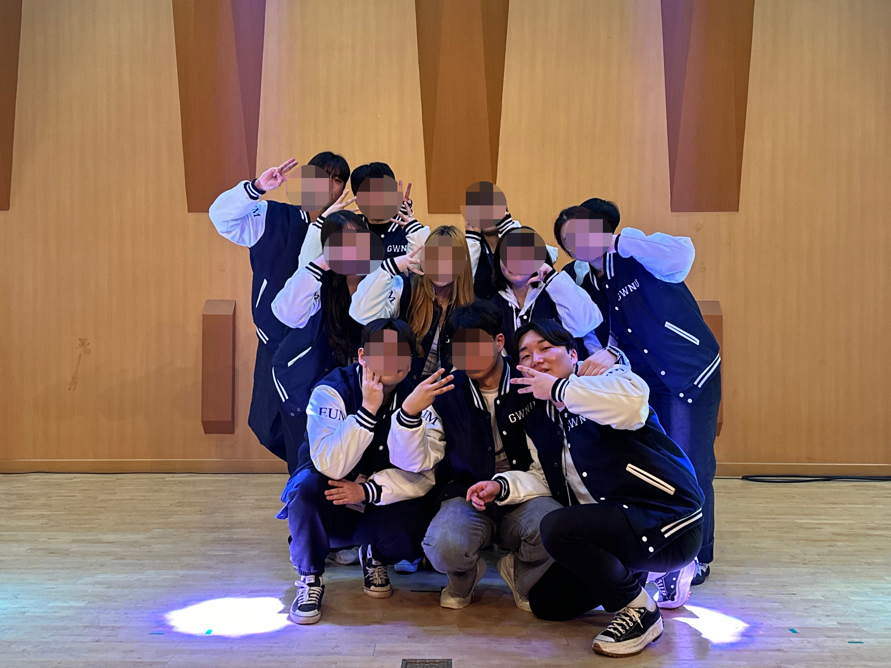
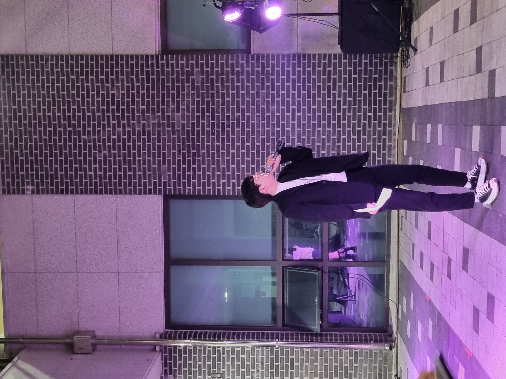
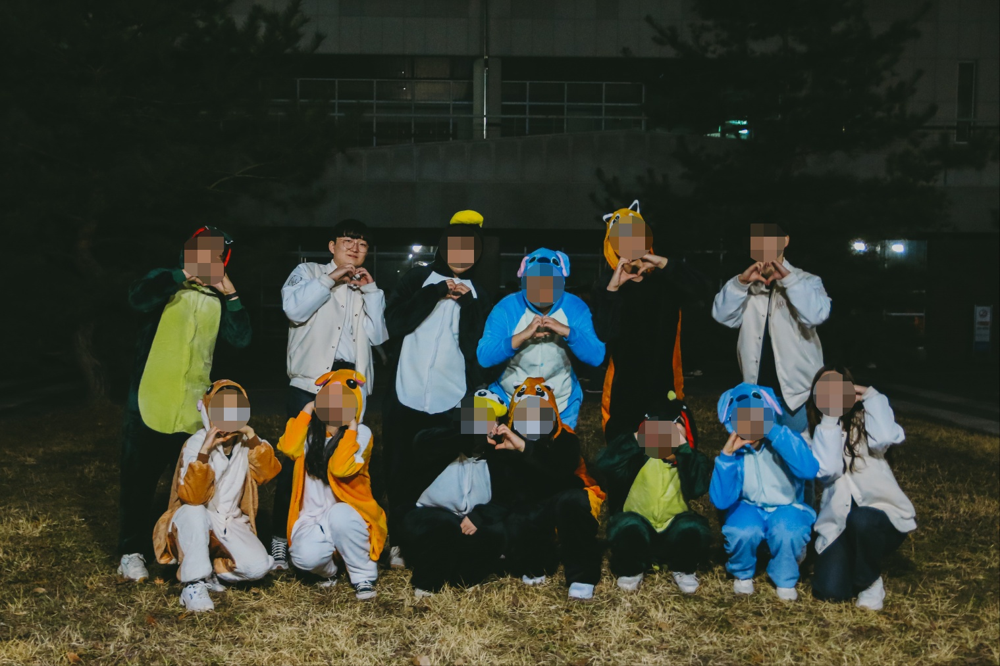
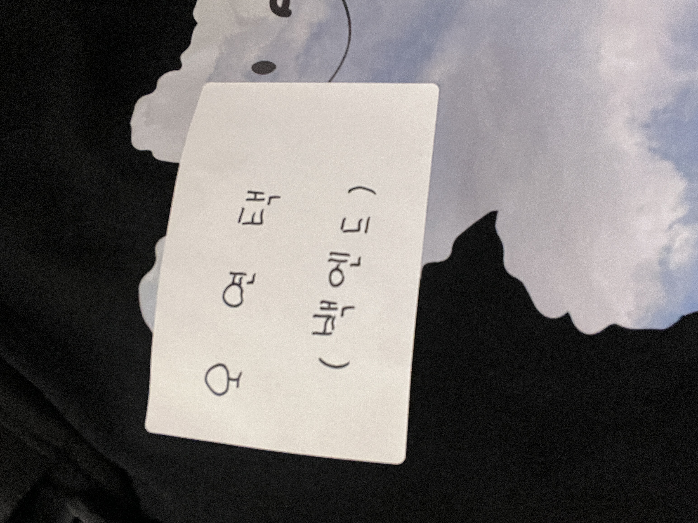
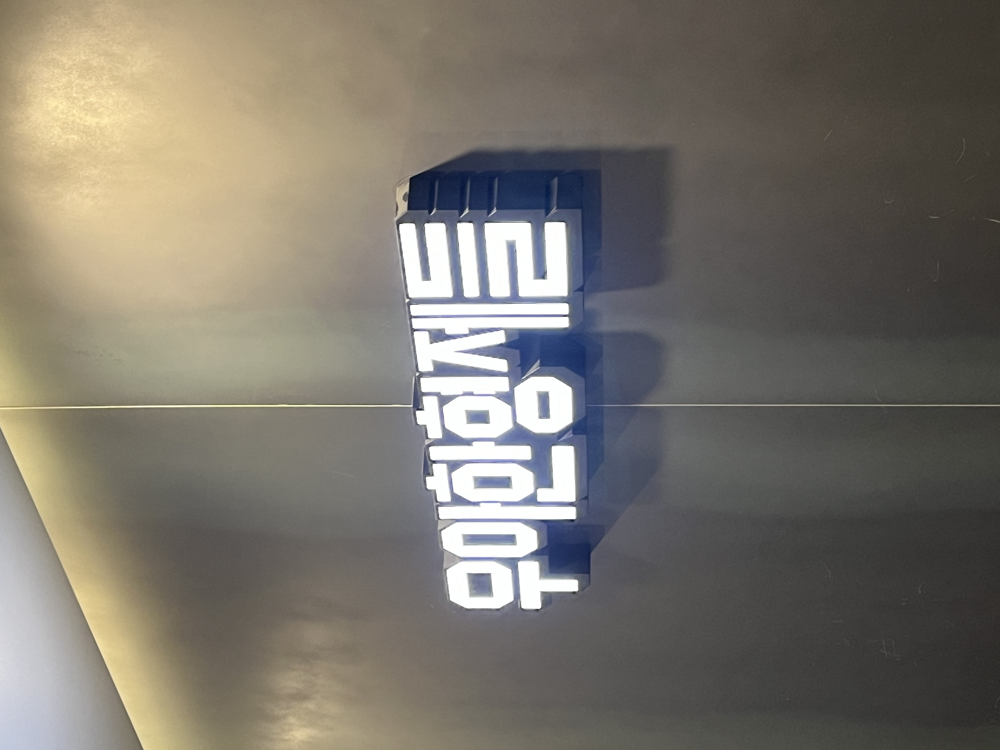

비타
자기소개
안녕하세요! 우아한테크코스 7기 BE 비타입니다.
항상 긍정적인 마인드를 유지하며, 웃음이 넘치는 사람이 되기를 목표로 하고 있습니다.
사람들과 소통하고 이야기를 나누는 것을 즐기며, 함께하는 시간을 소중히 여깁니다.
새로운 것을 배우고 도전하는 과정에서 큰 즐거움을 느끼며, 지속적인 성장을 추구합니다.
이번 우아한테크코스를 통해 한층 더 발전하고, 많은 것을 배울 수 있기를 기대하고 있습니다.
특기로는 코딩과 게임을 좋아하며, 번외로는 좋은 사람들과 함께하는 술자리를 즐깁니다.
📸 갤러리
인생의 첫 차, 노력의 결과물
노력의 결과
인생의 첫 차를 구매했습니다.
이 차는 저에게 가장 소중하고 아끼는 물건 중 하나입니다.
군대 시절 악착같이 절약하며 모은 돈과 4년 동안 상하차, 계곡 백숙집, 고깃집, 스크린 골프장에서 일하며 학업과 병행해 모은 돈으로 마련한 차입니다. 그렇게 어렵게 손에 넣은 차였기에, 구매 순간의 설렘도 컸지만, 무엇보다 그 후로 쌓인 추억들이 더욱 소중하게 느껴졌습니다.
이 차로 혼자 여행도 다녔고, 친구들과도, 사랑하는 사람과도 수많은 길을 달렸습니다.
첫 차 덕분에 더 많은 순간을 기록할 수 있었고, 그래서 저에게 단순한 이동수단이 아니라, 특별한 존재가 되었습니다.
대학교 동안 이룬 가장 큰 업적
뿌듯한 대학 생활
대학교 생활 동안 학회 활동을 통해 다양한 경험을 했습니다.
학회에서는 학교 축제와 여러 행사를 준비해야 했고, 항상 최선을 다해야 했습니다.
처음 해보는 일도 많아 어려움이 있었지만, 그만큼 성취감은 짜릿했습니다.
그중에서도 가장 흥미롭고 색다른 경험은 MC를 맡았던 순간이었습니다.
태어나서 무대 위에서 마이크를 잡을 기회가 있을 거라고는 상상도 못했지만, 학회 활동 덕분에 뜻밖의 도전을 할 수 있었습니다.
또한, 축제 웹사이트를 직접 제작했던 경험도 인상 깊었습니다.
실제 사용자들의 유입을 경험하고, 학우들이 편리하게 이용했다는 이야기를 들었을 때의 뿌듯함은 이루 말할 수 없었습니다.
이러한 경험들이 결국 개발자를 꿈꾸게 한 계기가 되지 않았나 싶습니다.